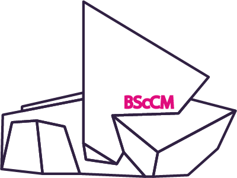

SHOWCASE PERIOD
21.06 ► 30.06
11:00 ﹣ 19:00
VEUNE
CMC GALLERY L3
Run Run Shaw
Creative Media Center
18 Tat Hong Avenue
Kowloon Tong
Hong Kong
21.06 ► 30.06
11:00 ﹣ 19:00
Run Run Shaw
Creative Media Center
18 Tat Hong Avenue
Kowloon Tong
Hong Kong
CMC GALLERY L3, Run Run Shaw Creative Media Center,
18 Tat Hong Avenue, Kowloon Tong, Hong Kong
Special Interest Group (SIG) was initiated by Professor Liu, Zhi-Qiang in 2005 and funded by a three-year seed grant from City University of Hong Kong since 2006. SIGs enable in-depth learning and training for BScCM students from Year One of their undergraduate programme. In the SIGs students participate in supervised extracurricular, professional research and development activities, through which students will gain first-hand, practical experience in developing digital media products which will prepare them for successful careers in digital entertainment industry. Special Interest Groups are managed by BScCM student members with the supervision of academic staff associated with the BScCM program. Students sign up for SIGs on their own interests and passions. They initiate and participate in projects that cover games, animation and special visual effects, installation, web-radio, photography, and digital art design. Playful Media is SIG's annual Showcase. The first Playful Media in 2007 was a great success and also co-exhibited with a premier international professional event: Asia's 1st ACM SIGGRAPH Traveling Art Show. Recently, SIGs consist of 5 different groups with special interests in different areas, namely: Animation & Visual Effects, Photography / Graphic Design, Games, Installation & Interaction, and Web Radio.
Future creative industry professionals are expected to excel their creativity with multiple capabilities, embracing both artistic and technological disciplines. School of Creative Media is uniquely poised to train innovative graduates in digital media field while Department of Computer Science has substantial experience in training professionals in computing technology. The BScCM programme combines core courses from both the School of Creative Media and the Department of Computer Science to produce graduates that bridge the gap between the technical and artistic side of the media field. The BScCM programme at City University of Hong Kong is the very first kind among Hong Kong higher education institutes at undergraduate level. Graduates from BScCM should be able to exploit the latest computing and media technologies in the creation of various media including computer games, computer animation and special effects, Internet applications and mobile devices and services. There are on 4 major focus areas for the BScCM program: Animation & Visual Effects, Photography / Graphic Design, Games, Installation and interaction.
| SIG Founder | Professor LIU Zhi-Qiang |
| 2016 SIG Advisors |
DR. FU, HONG BO Mr. YIM Chun Pang Mr. LEUNG Hiu Ming Eddie Mr. LAM Kin Ying Ryan Dr. AU Kin Chung Oscar Ms. YIP Choi Fung Koala |
| Student Advisor |
TSE Ka Ming LAM Beryl NG Siu Chi CHEUNG Kit Jacky TSUI Tsz Wai WONG Ho Yin SIN Yau Lung LAI Hoi Yan WONG Sze Nga LEE Chun Hin CHUN Tsz Fung WONG Wing Yan |
| Producer | Michelle Wong |
| Assistant Producer | Leung Kin Lok |
| Secretary | Cheng Sin Yan |
| Fiancial Manager | Cheng Sin Yan |
| Technical Director | Leung Kin Lok |
| Technical Team Member | Fung Mo Yee Liu Ho Yee Lam Chun Hei |
| AV Team | Fung Mo Yee Lo Chung Kei |
| Animation Team Leader | Tsoi Yuk Yan |
| Animation Team |
Kam Hoi Tng Au Yeung Tsz Yan Tang Hon Lun Leung Wai Kwo SZE Hiu Yan |
| Art Director | Au Yeung Tsz Yan |
| Art Team |
Lau Lok In SZE Hiu Yan Ng Tsun Ming |
| Event Manager |
WOO Tsz Ting Fu Hiu Mei |
| Website Team Leader | Choi Mang Ngai |
| Website Team |
Lo Chung Kei Wong Kit Chun |
| App Team | LAU Koon Leung |
| Promotion Team |
Wan pui yin ChauTszLing Anson Cheung Tong Hing |
| Group Leader |
Cheung Kam Wing Lam Chun Hei Liu Ho Yee Chan Suet Man Ng Hon Wah |
Producer: Michelle Wong
Assistant Producer: Leung Kin Lok
Website Team Leader: Choi Mang Ngai
Email Contact: info@playfulmedia.hk